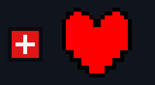
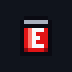
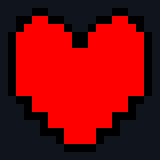
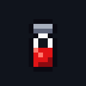

The energy pickup, dropped now and then by an enemy. Today it is a red square with a white cross. You pick it up by touching a 7 by 7 box; the picture may be up to 16 by 16, so the rest is room for a glint. It is the same in every area, so it can use its own colours, up to 15. Blown up eight times, at game speed.
Picked by the owner on 10 Nov 2026, with their own drawing attached, in their words: "no animation frames. just a still heart, scaled as needed to match the current e-tank size". Then: "scaling only in exact incriments until it is equal to or slightly larger that the current placeholder e-tank". Your heart is drawn at 18 by 18, each pixel its own, and today's E-Tank is 9 by 9 (its 7 by 7 box and its outline), so the only exact size at or above it is 1 times: your heart exactly as drawn, 18 by 18, the white around it see-through. Below, today's E-Tank and your heart side by side at true size against each other. Not in the game yet.




To pick: comment on this board, tag Claude, and give a letter.